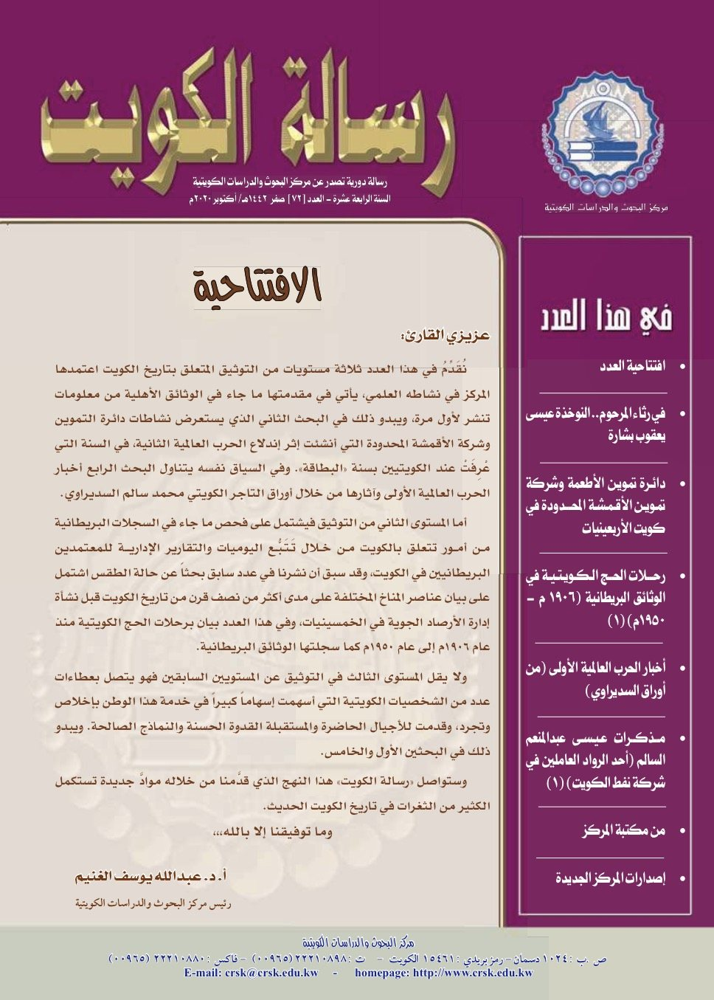
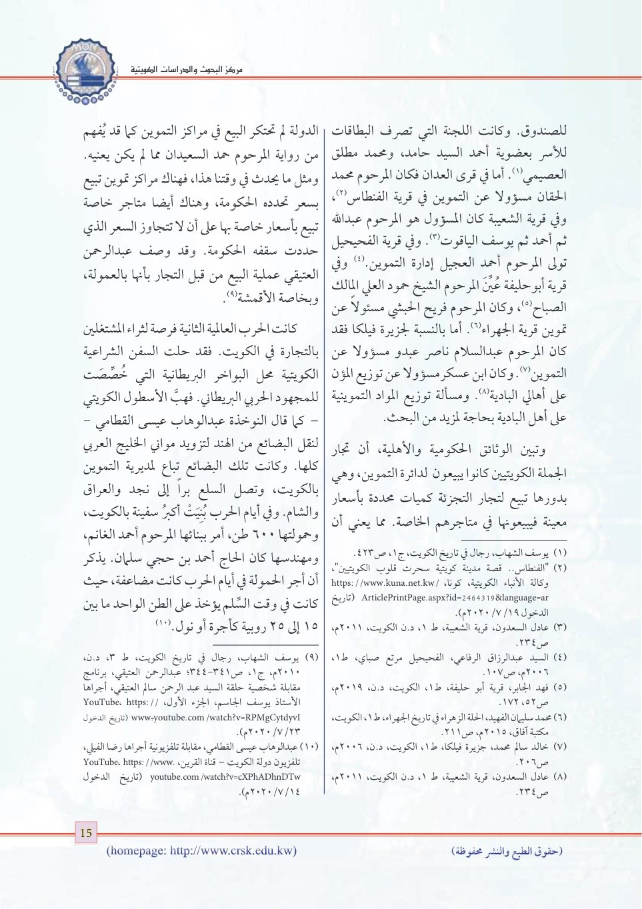

Second World War, published October 2020 · Magazine pages, «Da’irat Tamween Al-At’ima wa Sharikat Tamween Al-Aqmisha Al-Mahduda fi Kuwait Al-Arba’iniyat», Risalat Al-Kuwait, issue 72, year 14, Safar 1442 AH (October 2020), Center for Research and Kuwaiti Studies
Kuwaiti ships supplying the Gulf in the Second World War, as told by Nakhuda Abdulwahab Eissa Al-Qatami
What it is
The study of the Food Supply Department in the 1940s says the war was a chance for merchants to prosper: Kuwaiti sailing ships replaced the British steamers taken for the war effort, and the Kuwaiti fleet, as Nakhuda Abdulwahab Eissa Al-Qatami said, carried goods from India to supply all the ports of the Arabian Gulf; the goods belonged to the Kuwait supply directorate and reached Najd, Iraq and Syria by land. Its note 10 cites his television interview with Redha Al-Faili, Kuwait Television, Al-Qurain channel, on YouTube.
Why it matters
A published study that uses Abdulwahab bin Eissa’s own filmed testimony as a source.
Page copies


Sources
Risalat Al-Kuwait, issue 72, Safar 1442 AH (October 2020), Center for Research and Kuwaiti Studies, page 15
How this text was made: Photographed from the printed pages.
Open in the interactive site